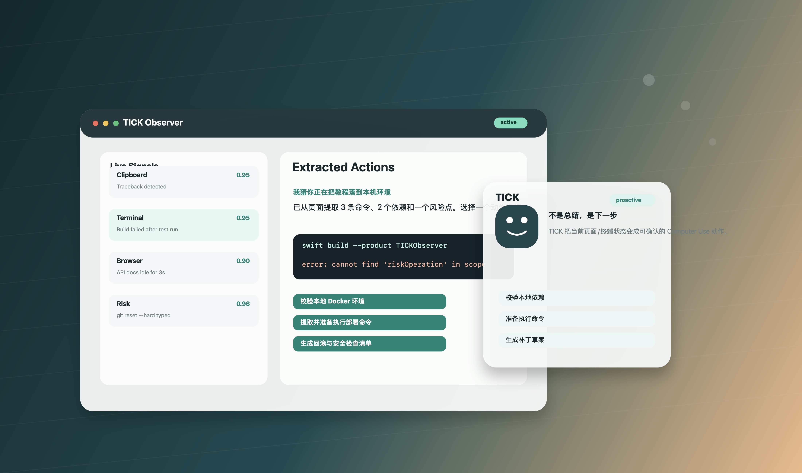
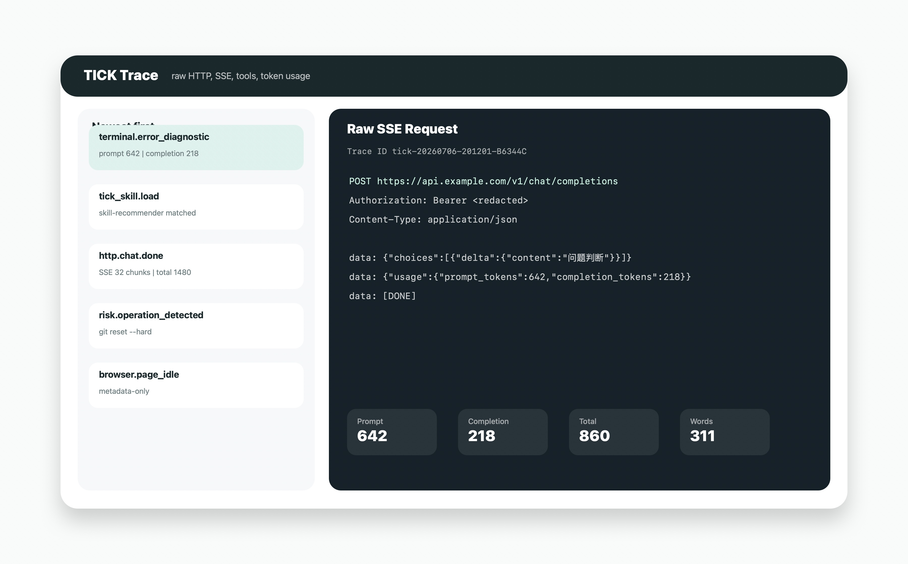

主动触发
监听剪贴板、前台窗口、浏览器页面、终端可见文本和键盘节奏。3 秒停留后采样，但只在内容足够有价值时触发。
Proactive Agent for macOS
一个常驻 macOS 桌面的 Proactive Agent。它不是等待你提问的聊天框，而是在复制报错、终端失败、页面停留、危险命令输入等关键时刻，轻轻展开悬浮机器人，把上下文变成可点击的下一步行动。

Why TICK exists
TICK 的目标是把 Agent 从“用户主动提问”推进到“系统理解时机”。Proactive Agent 的关键不是更会总结，而是更会判断时机：复制错误、构建失败、在文档页面停留、频繁撤销、准备执行高风险命令。每个信号都会经过本地筛选、去重和频率控制，只把高价值上下文交给模型。
输出也不是一个庞大的聊天窗口。TICK 用小而精的悬浮面板展示判断、证据、工具执行过程和行动按钮。它像桌面边缘的一张机器人脸，安静地眨眼、微笑，只在真正能帮你推进任务时出现。
What it does
监听剪贴板、前台窗口、浏览器页面、终端可见文本和键盘节奏。3 秒停留后采样，但只在内容足够有价值时触发。
网页不再被“总结”。TICK 会提取命令、配置项、报错线索和依赖条件，并给出“校验环境”“生成补丁”“准备执行命令”等按钮。
本地先抽取错误标题、命令、文件路径、行号、exit code 和附近上下文，再让模型输出中文修复建议。
识别 rm -rf、git reset --hard、无 WHERE 的 SQL 删除、基础设施销毁等操作，先本地弹出软拦截提醒。
每次主动输出都带有可点击动作。用户确认后，TICK 可以继续校验本地环境、准备命令、调用 Skills 或进入工具执行 loop。
只把 Skill 的 name 和 description 放进上下文；匹配后再读取完整 SKILL.md，脚本、参考资料和资产按需加载。
Designed for the moment
不是再造一个沉重 IDE，也不是抢占屏幕的聊天应用。TICK 把“触发、判断、执行、展示”压缩到桌面边缘的一个轻量界面中。
复制英文报错也会输出中文诊断，并给出“生成补丁草案”“定位相关文件”等动作。
先给出本地即时警告，再提供“生成安全替代命令”“列确认清单”等按钮。
浏览技术文档或 API 页面时，提取可执行命令和校验项，而不是复述页面内容。
Architecture
读取剪贴板、浏览器标题与正文、终端和应用的 Accessibility 文本。默认不截屏，避免触发屏幕录制权限弹窗。
通过用户配置的 OpenAI-compatible endpoint 调用流式模型。工具执行采用 loop 模式：模型请求工具，TICK 执行后把结果回传，直到模型给出最终输出。
Skills 从固定目录读取，MCP 只有配置后才暴露给模型，Hooks 由系统生命周期触发，不交给模型选择。
Trace as a product surface
TICK 内置 Trace 日志平台，最新事件在最前面，可以按 trace id 过滤单次问询。右侧展示原始 HTTP 请求和 SSE 返回，帮助开发者快速定位模型、工具、token、上下文或网络问题。

Download and Open Source
TICK 提供可下载的 macOS 应用包，也以完整 Swift Package 开源：主 App、后台观察进程、通用模型客户端、工具系统和 Trace 平台都放在同一个仓库里。
下载 zip 后解压，打开 TICK.app。首次启动需要在系统设置中允许必要的辅助功能权限。
git clone https://github.com/gokingd/TICK.git
cd TICK
swift build --product TICK
swift build --product TICKObserver
scripts/build_tick_app.sh